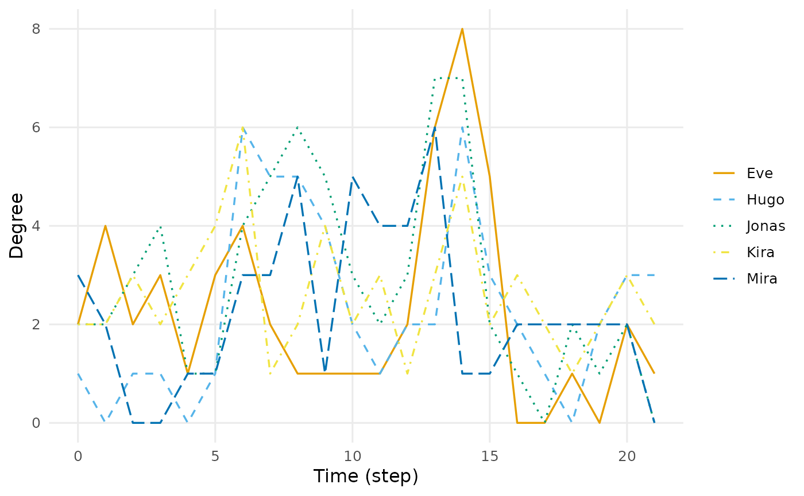
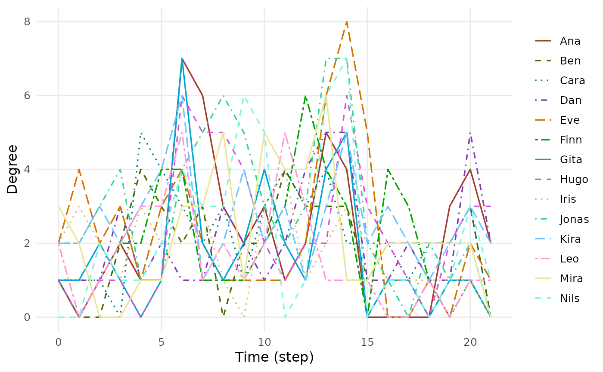

Draws the quantity against time. Node-level measures are drawn as one line per vertex; graph-level measures as one line per measure. Distinctions are carried by colour and line type together, never by colour alone.
Arguments
- x
A
dynet_metric.- type
"line"for trajectories over time,"heatmap"for a vertex-by-time tile plot,"ridge"for small multiples per measure.- highlight
Optional character vector of vertex names to draw in colour, with everything else in grey. Useful when there are many vertices.
- top
Draw only the
topvertices by mean value.NULLdraws all.- palette
Colours for the series:
"okabe"(the default),"extended","many", your own vector of colours, or a function ofn.- base_size
Base font size.
- ...
Ignored.
Examples
dn <- dynet(school_contacts)
plot(dyn_centrality(dn, measure = "degree"), top = 5)

plot(dyn_centrality(dn, measure = "degree"), palette = "extended")
